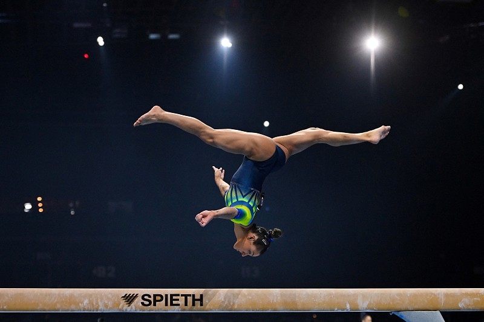

O que é a Ginástica Artística?
A ginástica artística, também conhecida no Brasil por ginástica olímpica, é uma modalidade de ginástica
onde os atletas realizam um conjunto de exercícios em aparelhos oficiais. Movimentos estes que revelam força,
agilidade, flexibilidade, coordenação, equilíbrio e controle do corpo.
Objetivo e principais regras da Ginástica Artística
O objetivo da modalidade é realizar com perfeição todos os movimentos. Nas competições, os ginastas executam
vários movimentos pré-determinados. Estes movimentos ocorrem nos aparelhos e no solo. Há diversos tipos de competições,
e cada uma com suas regras, mas no geral, o que determina as maiores notas, e consequentemente o primeiro lugar,
é o modo que os movimentos são realizados. Quanto menos erros, maior a nota.
Na prova de solo, giros, saltos e outros movimentos, os ginastas não podem ultrapassar o limite da quadra em forma
de quadrado. Além disso, os homens têm como regra 70 segundos para realizar movimentos, enquanto as mulheres têm 90 segundos.
História da Ginástica Artística
A história da ginástica artística é mais antiga do que pensamos. Acredita-se que os gregos praticavam diversos
movimentos e acrobacias em alguns aparelhos com o intuito de atingir a perfeição física.
A ginástica grega era uma preparação do corpo tanto para a prática de outros esportes, como para o treinamento militar.
Por quem, onde e quando foi inventada a Ginástica Artística?
No início do século XIX, o pedagogo alemão Friedrich Ludwig Christoph Jahn (1778-1852) foi um dos responsáveis
por transformar a ginástica artística em modalidade esportiva.
Ele fundou clubes de ginástica para jovens e interessados na modalidade e ainda, criou diversos aparelhos
que são utilizados até hoje.
Por esse motivo, é chamado por alguns de “pai da ginástica”. Visto que a prática era vista como perigosa,
Jahn foi preso e a ginástica foi proibida.
Felizmente, adeptos desse esporte não permitiram sua extinção. Assim, alguns alemães levaram a modalidade para outras
partes da Europa e do mundo.
Em 1881 foi fundada a Federação Europeia de Ginástica, o que resultou na consolidação dessa modalidade esportiva.

Nas olimpíadas
A ginástica estreou nos Jogos Atenas 1896, reunindo atletas de apenas cinco países, que competiram em quatro aparelhos.
Em Amsterdã 1928, as mulheres também passaram a competir, participando de uma única prova por equipes.
Nas competições, homens e mulheres competem no solo e no salto. As barras assimétricas e a trave são aparelhos
exclusivamente femininos, e os homens competem também na barra fixa, nas barras paralelas, no cavalo com alças e
nas argolas.

Ginástica Artística no Brasil
A ginástica artística chega ao Brasil em finais do século XIX. Trazidos por imigrantes europeus, foi nos Estados da
região do sul que ela teve início.
Em 1858 foi fundada em Santa Catarina a Sociedade de Ginástica de Joinville. Dez anos depois, foi fundada em Porto
alegre outra organização dessa modalidade: a Sociedade de Ginástica de Porto Alegre (Sogipa).
No início do século XX, Rio de Janeiro e São Paulo começaram a praticar ginástica olímpica em clubes da cidade.
O primeiro campeonato nacional ocorreu em 1950 entre atletas paulistas, cariocas e gaúchos.
Em 25 de novembro de 1978 foi criada a Confederação Brasileira de Ginástica (CBG), órgão responsável pela modalidade no país.
Logo, ela filiou-se à Federação Internacional de Ginástica (FIG), responsável pela organização de competições mundiais.
A primeira competição olímpica brasileira foi realizada em Moscou em 1980. Desde então, essa modalidade vem crescendo
no país. Merecem destaque os ginastas Daiane dos Santos e Diego Hipólito, ambos campões mundiais.
Curiosidades
O esporte já foi treinamento militar
Não é novidade que para ser um ginasta é necessário muito esforço físico. No entanto, o que muita gente desconhece
é que o esporte já foi usado como parte do treinamento militar dos soldados romanos. Saiba mais.
País com mais medalhas Olímpicas:
Ao contrário do que muita gente pensa, os chineses não são o país que domina o ranking de medalhistas Olímpicos,
mas sim a União Soviética com 182 medalhas. Sendo elas, 72 de ouro, 67 de prata e 43 de bronze.
O competidor mais jovem:
Dimitris Loundras de apenas 10 anos foi o atleta mais jovem a competir no esporte. O grego competiu na edição de 1896
na modalidade de barras paralelas em equipe. Naquele ano, saiu campeão junto com seu grupo que ganhou a medalha de bronze.
Primeiro campeonato brasileiro:
Só ocorreu em 1950 e contou com a participação de apenas 3 estados, sendo eles São Paulo, Rio de Janeiro e Rio Grande do Sul.
O esporte demorou a se popularizar pelas outras regiões.